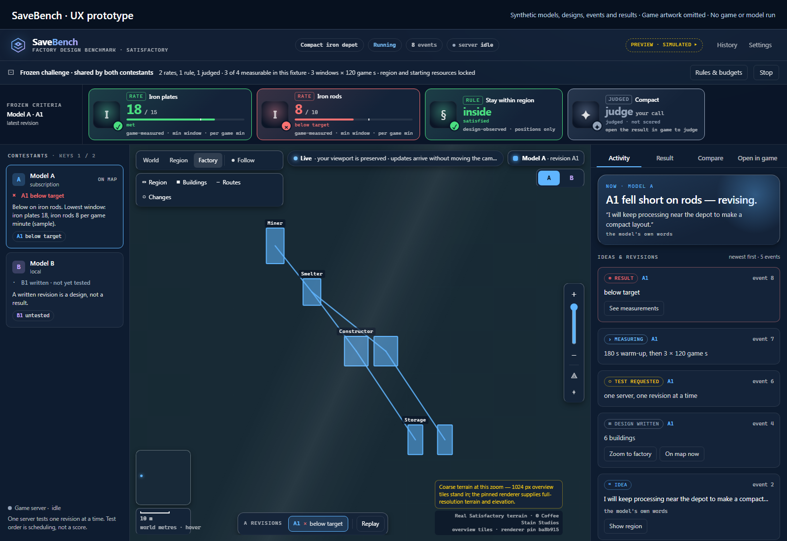

-
Trial 1
Test the measuring tool first.
Every trial starts with a control: a sample factory with a known answer. This one should have delivered both products. It showed zero copper and zero concrete in each of two 61-second windows.
That meant the measuring tool was broken, so the AI's factory was never judged. A missing measurement isn't scored as zero production.
-
Find the fault, then prove the fix.
The part that writes a design into the game's save file filled in a storage filter the game leaves empty. Materials reached the belts, but the depot counted none. The fix writes the filter the way the game does.
In the second trial the connected control delivered both products and a disconnected copy delivered nothing. Now the tool could see a delivery, and see when there wasn't one.
-
Trial 2
Measure the same design again.
Same design, byte for byte, and the same rule, fixed in advance: at least 20 copper ingots and 15 concrete a minute in every two-minute window, after a three-minute warmup.
-
Two of three windows missed. The FAIL stays.
Copper missed the first window. None had reached the depot when measuring began, most likely because the first ingots were still on a long belt, but the record doesn't prove that. Concrete missed the third by a hair: 30 delivered where 30.25 were needed, because one concrete machine runs at exactly the target rate. A good later window doesn't cancel an earlier miss.
The FAIL is specific and useful, so it stays on the record. Nobody loosened the target or combined the two trials into a score.
Work SaveBench
SaveBench · AI factory designCan an AI design a factory that actually runs?
SaveBench asks AI models to design a factory in the game Satisfactory, then lets the running game measure what it delivers. A factory that only works on paper doesn't count.
Recorded experiment · game runs from September 9 to 23, 2026

Before you judge the factory, check the ruler.
An AI agent designed a copper and concrete factory from the challenge alone: 34 buildings, 15 belts and 7 power lines. Nobody changed it afterward. Then the game measured it.
When the rules rewarded the wrong thing, I changed the test.
In a later campaign, an AI model earned the game's milestones by feeding machines by hand and never built a conveyor belt. At first I called that a flaw in the model. Then I decided SaveBench measures factory design, not whether an AI chooses to automate. So the test became a production quota the factory has to keep meeting while nobody touches it, an approach from the Factorio Learning Environment research benchmark.
A harder challenge: 120 copper ingots and 60 concrete a minute in every window, slow belts only. Every AI design failed, and those FAILs were kept.
The same targets with faster belts allowed. Designs by Claude Opus 4.7 and GPT-5.5 (as configured) passed every window. Claude's first pass came from revising its own design after a measured FAIL. Both also had FAILs, so this isn't a ranking.
A campaign in a persistent world, judged by milestones bought in the game. Claude Opus 4.7 (as its runtime reported) bought eight. While it did, the interface let it move items into and out of machines without spending game time.
I changed what SaveBench measures: a quota the factory must keep meeting through a hands-off period.
The first quota sessions: 30 wire a minute into a declared depot. No session has passed yet. Two were inconclusive because the factory wasn't left untouched long enough, and the instructions had left out the hands-off rule. The latest session states it, and had no result as of September 23.
Watch how the factory gets designed.
The workspace puts the factory map beside the challenge's conditions, the revision you're looking at and an activity feed. Earlier builds of this interface ran the real comparisons on September 12 and 13.
A1's factory stays beside its public plan, its revision activity and its result.

Read the conditions
Rate targets and region rules are scored separately. Compactness is left to judgment.
Revisit an attempt
Older revisions keep their own diagrams and results, so a later success never erases an earlier shortfall.
Compare approaches
Measured rates, building counts and each contestant's own account of its approach carry separate labels.
No single winner
A challenge sets targets. The comparison shows how different designs got there.
Watch a comparison take shape.
The prototype's real controls running on the same sample data: look at the criteria, start the preview, step through its events, go back to an earlier revision, then compare the latest designs.
Read the descriptive transcript
- 00:00: The SaveBench prototype, with no game artwork and with made-up contestants, designs, events and results. The challenge and its shared criteria are shown before the run starts.
- 00:04: Pressing Run starts the built-in preview. The preview's own controls feed in its scripted sample events.
- 00:08: A1's factory diagram appears with its public plan and event feed. Its iron rod rate is 8 against a target of 10 items per game minute.
- 00:12: The remaining sample events bring in results for A2, A's second revision, and B1, B's first design.
- 00:17: A2's result shows its later measurements, which meet both rate targets.
- 00:20: Selecting the older A1 brings back that revision's diagram and result. Its shortfall stays visible after A2's success.
- 00:23: Compare uses the latest tested revisions, A2 and B1. Finding B1 on the map shows its different eight-building layout.
- 00:27: The comparison keeps observed design differences apart from each contestant's own account of its approach. The sample challenge sets targets, not one overall winning score.
- 00:31: The map keeps both factories in view, drawn as the prototype's simple rectangles and routes.
What went into this work.
What I did
I decide what each project is for and check what comes back. I want AI models to design factories and the game itself to judge them. The September 18 call on what SaveBench measures was mine.
What the AI did
AI tools write the code: the prototype's interface, the part that writes designs into save files, the evaluator and the tests. AI contestants designed the factories judged here. The save-file work uses Satisfactory Agent Tools by petehunt, a fork of GreyHak's sat_sav_parse, both GPL-3.0.
What ran, and what it shows.
- Recorded
- Two trials in the game on September 9, 2026. Every rate, target and window above comes from their records. The later results come from SaveBench's own run records through September 23, 2026.
- Prototype
- The screens and recording show the prototype's own controls on made-up sample data, with no game, model or server behind them.
- Not shown yet
- A pass on the newer quota test, and any ranking of models. The September 9 result covers one design on one challenge.
The full record: trial details, conditions and credits
| Window | Copper ingots (20) | Concrete (15) | Both met |
|---|---|---|---|
| 1 | 15.8678 | 15.3719 | No |
| 2 | 60.0000 | 15.2459 | Yes |
| 3 | 60.9917 | 14.8760 | No |
Same design, repaired tool
The factory design, its build list, the task and the targets were identical in both trials. The save-writing code, the contestant tools and the evaluator's recorded version all changed with the repair, so the contestant's save file was rebuilt. This is the same design measured again with a repaired tool, not a rerun of identical files. Apart from these, one record differs only in its creation time.
Why each window missed
When measuring began, no copper had reached the depot yet; the record says that fits copper still traveling the long belt route, but doesn't prove it. For concrete, the design used one machine, which makes exactly 15 a minute at normal speed, and this challenge had no way to speed a machine up. The next day, the same default warmup left three reference factories short in their first window, so challenges in SaveBench's library now set their own warmup. This FAIL was not rescored.
The designer
The agent started with a fresh context and only the challenge and the tools every contestant gets, and the record shows its design used only those. The coordinating agent wrote the designer's instructions for this early run instead of using a frozen set, so the result stands on its own. The designing model isn't named because the only record of it is private session data. Later model names carry their basis (as configured, or as the runtime reported) and were not independently confirmed.
The captures
The screenshots come from a development branch of the private prototype, commit 58cfbde8. The small print in each corner, "Real Satisfactory terrain" and "renderer pin ba8b915", is the prototype's own label for the public map renderer valentinps/satisfactorymap at ba8b915. The terrain was removed for publication, so the captures don't show the renderer or the game working. No independent test of the interface itself was finished.
Nothing on this page was rerun for the site: no new game session, model contest or paid trial.
An independent research prototype, not affiliated with or endorsed by Coffee Stain Studios. Satisfactory is a trademark of its owner; no game artwork is distributed here.